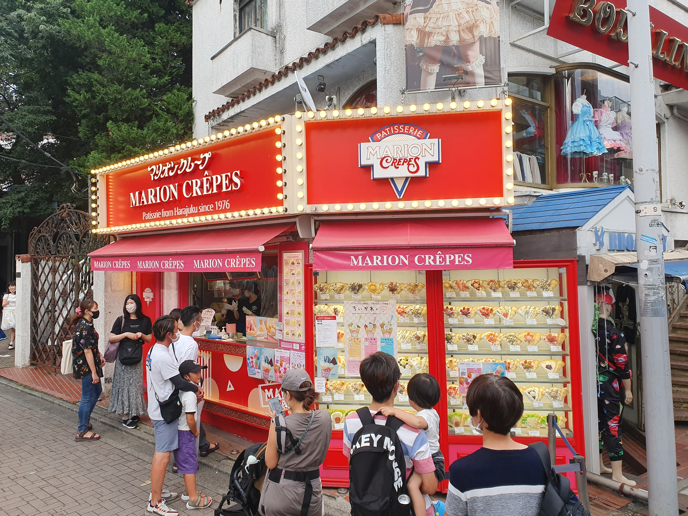
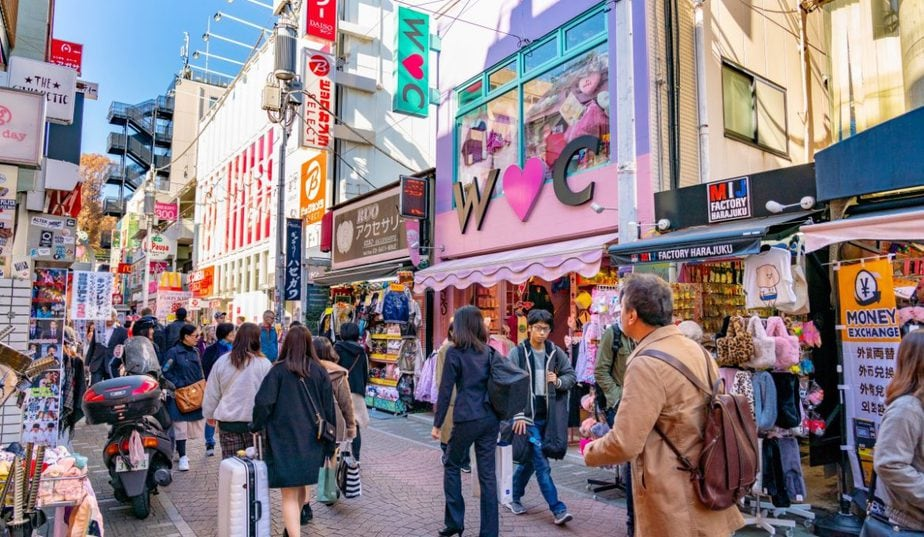
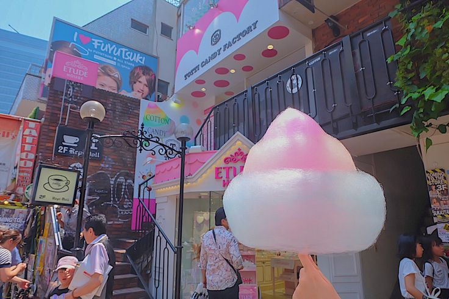
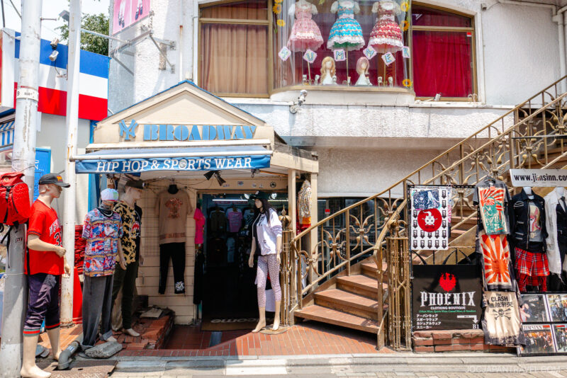
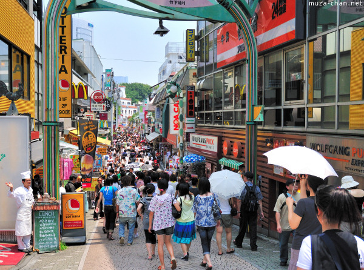

竹下通りは、原宿を象徴するストリートであり、日本の若者文化や“Kawaii”カルチャーを世界へ発信し続ける場所です。全長約350mの通りには、カラフルなファッションショップやフォトジェニックなスイーツ店、個性あふれる雑貨店が立ち並び、歩くだけで原宿ならではのエネルギーを体感できます。日本の「かわいい」が生まれ、進化し、世界へ広がっていく―そんなカルチャーの最前線です。
基本情報
Access
JR原宿駅 竹下口 徒歩3分
明治神宮前駅 徒歩5分
明治神宮前駅 徒歩5分
Hours
店舗により異なる
おおむね 10:00 — 20:00
おおむね 10:00 — 20:00
Best Time
平日午前中（混雑回避）
夕方は写真映えする光
夕方は写真映えする光
見どころ

竹下通りアーチ
カラフルなバルーンアートが目印の入口。記念写真の定番スポット。

マリオンクレープ
原宿クレープの元祖。大行列必至の人気店。甘い香りが通りに漂う。

カラフルなショップ街
ファッション、雑貨、コスメ。「かわいい」が溢れる通り。

TOTTI CANDY FACTORY
巨大なレインボー綿菓子で有名。Instagramの定番。

個性的ファッション
ロリータ、ゴシック、Y2K。世界中のサブカルが集う。

エネルギッシュな雰囲気
国内外の若者で溢れる、活気と笑顔の通り。
おすすめルート
- 竹下通りアーチでスタート＆記念撮影
- マリオンクレープで食べ歩き
- WEGO・サンキューマートでショップ巡り
- TOTTI CANDY FACTORYでかわいいスイーツ
- 路地裏（裏原宿）も探索
- 表参道へ抜けて大人の原宿へ
かわいい！ おいしい！ たのしい！ — 原宿のメインストリート ♡